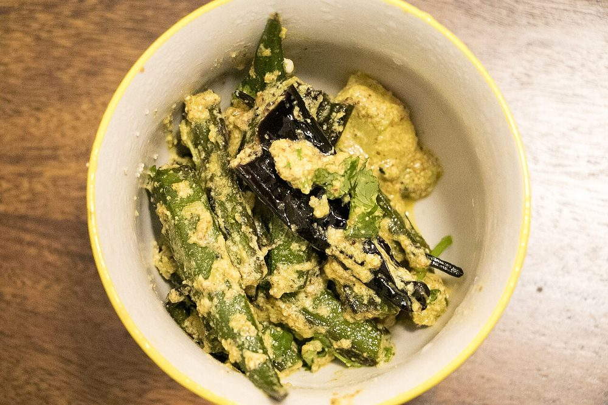

Bhinda Sambhariya
whole okra stuffed with a peanut, coconut and sesame masala, cooked gently in a covered pan

Contains: peanuts, sesame, mustard
Ingredients
Quantities for 4.
- 400g, small and tender Okra
- 4 tbsp, roasted and coarsely ground Peanut
- 3 tbsp, dry-roasted until it smells nutty Besan
- 2 tbsp, roasted and crushed Sesame
- 3 tbsp, grated Coconut
- 2 tsp Coriander Powder
- 1 tsp Cumin Powder
- 1/2 tsp Turmeric
- 1.5 tsp Chilli Powder
- 1 tsp Sugar
- 1 tbsp juice Lemon
- 1 tsp, paste Ginger
- 2, minced Green Chilli
- 4 tbsp, finely chopped Coriander Leaves
- 4 tbsp Neutral Oil
- 1 tsp Mustard Seeds
- 1/4 tsp Asafoetidause compounded-free hing to keep this gluten-free
- to taste Salt
Cookware
stovetop, kadhai
Checked against the ingredient list for ten allergens: milk, egg, fish, crustaceans, tree nuts, peanuts, sesame, mustard, soy and gluten. Brands vary, so read the label on anything new to you.
Before you start
- Wash the okra a good hour ahead and dry each pod completely with a cloth. Any water left on them turns the whole dish slimy.
- Roast the peanuts, sesame and besan separately and let them cool before grinding. Warm nuts go pasty.
- Choose small pods, 7-8cm; large okra is fibrous and splits when stuffed.
Method
- Top and tail the okra and slit each pod lengthways down one side, stopping short of both ends so it stays whole.
- Mix the ground peanut, roasted besan, sesame, coconut, all the ground spices, sugar, salt, ginger, chilli, coriander leaves and lemon juice into a crumbly stuffing.It should just clump when squeezed. If it is dust-dry, add a teaspoon of oil, not water.
- Press the stuffing into each pod with a small spoon or your fingertip, filling but not splitting them.
- Heat the oil in a wide kadhai, pop the mustard seeds and add the asafoetida.
- Lay the stuffed okra in a single layer and let them sit undisturbed 4 minutes to blister on the underside.Stirring early breaks the pods open and spills the masala.
- Turn each pod gently with tongs, cover, and cook on low heat 12 minutes.
- Uncover, shake the pan and cook 5 minutes more until the okra is tender, the surfaces are lightly browned and no sliminess remains.If it still looks ropey, finish uncovered on higher heat for 2 minutes. Dry heat fixes it.
- Scatter over any leftover stuffing, let it toast for a minute, and serve with rotli.
Storage
Keeps 2 days refrigerated. Reheat uncovered in a dry pan so the okra crisps again rather than steaming; the microwave makes it slippery.
Nutrition Good estimate
Medium protein: 10 g a serving, 11% of the calories
| Per serving182 g | Per 100 g | |
|---|---|---|
| Calories | 371 kcal | 204 kcal |
| Protein | 10.5 g | 6 g |
| Carbohydrate | 23.3 g | 13 g |
| of which sugars | 5.7 g | 3 g |
| Fibre | 8.6 g | 5 g |
| Fat | 28.8 g | 16 g |
| of which saturated | 6.2 g | 3 g |
| of which unsaturated | 20.8 g | 11 g |
Nearest database match used for asafoetida. Estimated from raw ingredients using USDA FoodData Central.
More like this: Vegan Indian recipes · Vegetarian Indian recipes · Gluten-free Indian recipes · Dairy-free Indian recipes · No onion no garlic recipes · Gujarati recipes
Times, yields, allergens and nutrition are guidance. Use your own judgement on doneness and on storing. More in About.